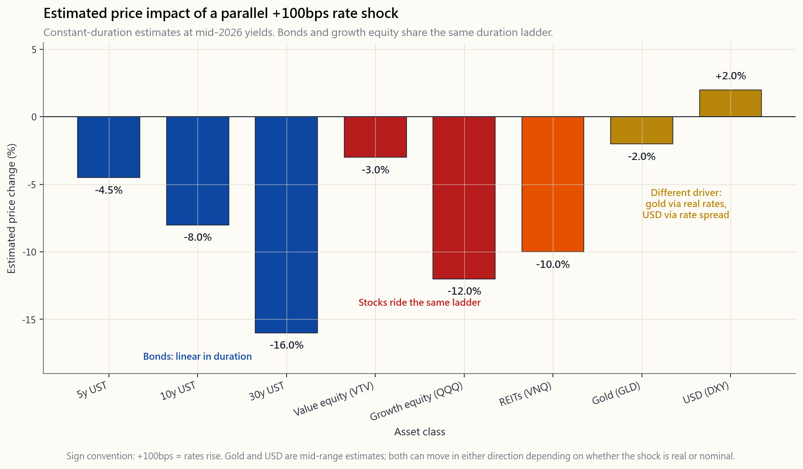
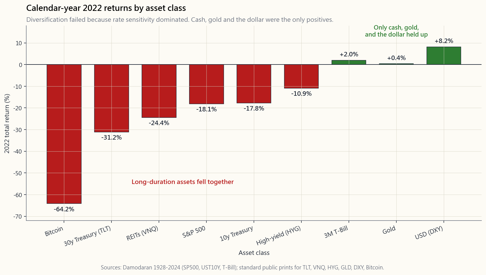

Week 34: Rate Sensitivity Across Asset Classes
1. Why This Is Important
Every asset on Earth is priced by discounting its future cash flows back to today. The discount rate is built on top of the risk-free rate -- the yield on a US Treasury. Move the Treasury, and you move every price in the world. That is not a metaphor. It is arithmetic.
This lesson gives you the cross-asset playbook for the next +100bps and the next -100bps. Week 47 will use it to size a tail-risk hedge.
2. What You Need to Know
2.1 The Master Formula
Every asset's price equals the present value of its cash flows:
$$P = \sum_{t=1}^{\infty} \frac{CF_t}{(1+r)^t}$$
Modified duration $D$ is the percentage price change for a 1% change in $r$:
$$\frac{\Delta P}{P} \approx -D \cdot \Delta r$$
That is the entire game. The longer the cash flow timeline, the larger $D$, and the more violent the price reaction to a rate move. A 30-year zero-coupon bond has $D \approx 30$. A short-duration value stock has $D \approx 5$. A long-duration unprofitable growth name has $D \approx 30$ as well -- which is why ARKK and TLT moved together in 2022.
2.2 The Rate-Shock Cheat Sheet
Estimated price impact of a parallel +100bps shock at the long end of the curve (mid-2026 starting yields, broadly representative):
| Asset class | Approx. $D$ | Δ price for +100bps |
|---|---|---|
| 3-month T-Bill | 0.25 | -0.25% |
| 5-year Treasury | 4.5 | -4.5% |
| 10-year Treasury | 8 | -8% |
| 30-year Treasury | 16 | -16% |
| Investment-grade corp (LQD) | 9 | -10% |
| High-yield corp (HYG) | 4 | -6% |
| S&P 500 broad | 18 | -7% |
| Value equity (VTV) | 10 | -3% |
| Growth equity (VUG / QQQ) | 22 | -12% |
| REITs (VNQ) | 18 | -10% |
| Gold (GLD) | -- | -2% to +5% |
| Long-duration crypto / unprofitable tech | 30+ | -20% or worse |
| US dollar (DXY) | -- | +1% to +3% |
Two assets break the duration formula. Gold has no cash flow, so you cannot compute duration directly -- its rate sensitivity comes through inflation expectations. The dollar is a relative price, not a discounted cash flow, so it moves with the spread between US rates and foreign rates. We handle both separately in §2.5 and §2.6.
![Horizontal bar chart showing the estimated price impact of a parallel +100bps shock at the long end of the curve across the major asset classes — 5y Treasury, 10y Treasury, 30y Treasury, IG corporates (LQD), HY corporates (HYG), S&P 500, value equity (VTV), growth equity (VUG/QQQ), REITs (VNQ), gold (GLD), long-duration crypto / unprofitable tech, and the US dollar (DXY). Bars fan out from -20% (long-duration crypto) and -16% (30y Treasury) on the left through to small positives for gold and DXY on the right. The chart is the visual companion to the cheat-sheet table above and is the unifying picture: same shock, different durations, dramatically different price reactions.](image/week34_rate_shock_grid.png)
2.3 Bonds: Linear in Duration
Bonds are the textbook case. A 30-year Treasury is roughly twice as rate-sensitive as a 10-year, which is roughly twice as sensitive as a 5-year. A barbell of T-Bills + 30-year zeros has the same average duration as a bullet of 10-years but very different convexity. For most portfolios the right anchor is the 5- to 10-year intermediate Treasury (IEF, IEI). The 30-year (TLT, EDV) is a speculative rate trade -- it loses 16% on +100bps and gains 16% on -100bps. That belongs in the alpha sleeve, not the bond sleeve.
2.4 Equities: Duration in Disguise
Growth equities are long-duration assets in everything but name. The 2022 case is the cleanest evidence we have ever had:
- 10-year Treasury yield rose from 1.5% to 4.0% (+250bps).
- ARKK (long-duration unprofitable tech) fell ~67%.
- QQQ (large-cap profitable tech) fell ~33%.
- VTV (value, short duration) fell ~5%.
- That ranking matches the duration ladder exactly.
2.5 Real Estate: Levered Duration
REITs are highly rate-sensitive for two compounding reasons. First, the rent stream is long-dated (cap rates compress and decompress with the 10-year). Second, the underlying properties are levered roughly 50%, so refinancing risk amplifies rate shocks. Office REITs in 2022-2024 lost 40-50% of equity value as cap rates went from 5% to 7-8% on the same rent. Residential and industrial held up better, but VNQ as a whole drew down 30%+ in 2022. Rule of thumb: REITs trade like a leveraged 15-year bond.
Mortgage rates are the second-order channel: 30-year fixed rates went from 3% to 7.8% in 2022-2023, killing housing transaction volume. Anyone with a floating-rate construction loan was forced to refinance into much higher rates -- many did not survive.
2.6 Gold: A Function of Real Rates, Not Nominal
Gold has no cash flow, no yield, and no earnings. Its price is the inverse of confidence in fiat. The driving variable is real rates -- the 10-year nominal yield minus expected inflation (the TIPS breakeven). When real rates rise, gold falls (the opportunity cost of holding zero-yield gold goes up). When real rates fall, gold rises.
That is why 2022 was so unusual: nominal rates rose violently, but inflation also rose violently, so real rates only rose modestly. Gold ended the year at +0.4%. In 1980 the same arithmetic ran the other way: Volcker hiked nominal rates above inflation, real rates went strongly positive, and gold collapsed from $850 to $300. Gold is a store of value because enough people believe it is, and real rates are the mechanism of that belief.
2.7 The Dollar: A Spread, Not a Level
DXY measures the dollar against a basket of trading-partner currencies. It moves with the spread between US rates and foreign rates, plus a risk-on/risk-off premium. When the Fed hikes faster than the ECB and BoJ (2022), the dollar rallies. When it hikes slower (2002-2004, 2017-2018), the dollar falls. A +100bps shock to US rates that is matched by foreign hikes does roughly nothing to DXY. A +100bps shock that is purely US -- the 2022 case -- pushes DXY up 5-10%.
The second-order effects of a strong dollar matter: emerging markets weaken, US multinational earnings translation hurts (~50% of S&P 500 revenue is overseas), and gold faces a headwind. We stay US-only on the long side; the dollar is the reason that works.
2.8 The 2022 Case Study: Why Diversification Failed
Calendar-year 2022 returns by asset class (Damodaran + standard data):
- S&P 500: -18%.
- 10-year Treasury: -18%.
- 30-year Treasury (TLT): -31%.
- High-yield corporates (HYG): -11%.
- REITs (VNQ): -24%.
- Gold (GLD): +0.4%.
- DXY: +8%.
- Bitcoin: -65%.
![Bar chart of calendar-year 2022 total returns across the major asset classes: S&P 500 -18%, 10y Treasury -18%, 30y Treasury (TLT) -31%, high-yield corporates (HYG) -11%, REITs (VNQ) -24%, gold (GLD) +0.4%, US dollar (DXY) +8%, Bitcoin -65%. The negative bars dominate the picture; only gold and the dollar finished positive. The chart is the empirical proof that diversification is conditional on the driving variable not being shared — a +425bps Fed shock simultaneously hit every long-duration asset, regardless of label.](image/week34_2022_case.png)
The investor's takeaway is not "diversification is dead." It is "diversification is over the driving variable." If your six assets all share rate sensitivity, you do not own six assets -- you own one trade in six wrappers. To diversify in a rate-driven world you need exposures that respond to different drivers: cash, gold (real-rate hedge), short volatility (the vol tail is what wags the dog), or genuine alpha.
3. Common Misconceptions
4. Q&A Section
Q1: How do I quickly estimate the rate impact on a stock I own? A: Look at its forward P/E. A P/E of 30 implies most of the value is far-future cash flow, and duration is roughly P/E × 0.7. A P/E of 30 stock has $D \approx 21$, so +100bps takes off ~21%. A P/E of 12 stock has $D \approx 8$, so the same shock takes off ~8%. It is a back-of-envelope rule but it is shockingly close.
Q2: Should I avoid long bonds entirely? A: No -- you should own them deliberately. A 30-year Treasury (TLT, EDV) is one of the only assets that positively benefits from a recession-driven rate cut. In a recession scenario stocks fall and TLT rises 20-30%. The trick is sizing it small enough that the 16% loss on +100bps is survivable. Treat TLT as a tail-risk hedge, not a bond holding.
Q3: What about TIPS? A: Treasury Inflation-Protected Securities have lower duration than nominal Treasuries because part of the cash flow comes from CPI accruals. A 10-year TIPS has $D \approx 7$ and reacts to real rates only. They are the cleanest rate hedge if you specifically fear stagflation.
Q4: Why did my "balanced" 60/40 fund lose 17% in 2022? A: Both legs shared the same driver (long-duration discounting). When the discount rate jumped 250bps, both legs marked down at once. The same fund made money in 2008 because that was a growth shock, not a rate shock -- bonds rallied while stocks fell. Different driver, different outcome.
Q5: How do I hedge rate risk without selling everything? A: Three options: (1) shorten bond duration by replacing TLT with IEI or even SHV; (2) buy puts on TLT or QQQ (cheap when realized vol is low, and the option wrapper is the most tax-efficient way to take leverage in a US taxable account); (3) hold cash equivalents (BIL, SGOV) which have zero duration and earn the front-end rate. We will cover put-spread tail hedges in Week 47.
Q6: Does this apply internationally? A: Yes, but with the dollar overlay. A foreign bond hit by +100bps in the local rate falls by its local duration in local currency. If the dollar simultaneously rallies, the dollar-translated loss is amplified. This is one reason we keep the long sleeve US-only.
Q7: Why are utilities and consumer staples called "bond proxies"? A: Their dividends are stable and slow-growing, so most of their value is far-future cash flow. They have duration similar to a 15-year bond. In 2022 utilities fell 1% (resilient); in 2008 they fell 30% (credit shock dominated). They behave like bonds as long as the rate channel is the only channel firing.
Q8: What is the "rate sensitivity" of my emergency fund? A: Zero, by construction. T-Bills (BIL, SGOV), money-market funds, and savings accounts have $D < 0.25$. That is the point: the cash sleeve is the only sleeve that does not move with rates, which makes it the only true diversifier in a rate-driven world. The barbell construction has cash on one end for exactly this reason.
Q9: How much can the +100bps move actually be? A: Historically, the Fed has moved +400 to +525bps in a single tightening cycle (1981, 1994, 2004-2006, 2022-2023). Pricing your portfolio for "+100bps" is the modest scenario. The interactive lab lets you push the shock to ±300bps to see what the tail looks like.
Q10: Where does this fit in the four-tranche framework? A: Cash tranche: zero rate sensitivity. Beta tranche: holds the unavoidable rate exposure of the equity index ($D \approx 18$). Factor tranche: tilted toward shorter-duration value (lower $D$) for partial hedging. Alpha tranche: deliberately uses TLT, options on TLT, and gold to take rate views actively. Knowing the duration of each tranche is the first step in deciding how much rate risk you actually carry.
第34週：各資產類別的利率敏感度
1. 為何此議題至關重要
地球上每一項資產的定價，都是將未來現金流折現至今日。折現率建立在無風險利率之上——即美國國債的收益率。國債一動，全球每一個價格隨之而動。這不是比喻，而是算術。
本課為你提供應對下一次+100個基點及下一次-100個基點的跨資產操作手冊。第47週將以此作為依據，為尾部風險對沖進行規模設定。
2. 你需要掌握的知識
2.1 主要公式
每項資產的價格，等於其現金流的現值：
$$P = \sum_{t=1}^{\infty} \frac{CF_t}{(1+r)^t}$$
修正存續期 $D$ 是價格對利率1%變動的百分比變化：
$$\frac{\Delta P}{P} \approx -D \cdot \Delta r$$
這便是整個遊戲的核心。現金流時間線越長，$D$ 越大，價格對利率波動的反應便越劇烈。一隻30年期零息債券的 $D \approx 30$。一隻短存續期的價值股，$D \approx 5$。一隻長存續期的虧損增長股同樣有 $D \approx 30$——這正是ARKK與TLT在2022年同步下跌的原因。
2.2 利率衝擊速查表
在收益率曲線長端平行+100個基點衝擊下的估計價格影響（以2026年中期起始收益率為基準，具廣泛代表性）：
| 資產類別 | 約 $D$ | +100個基點時的價格變動 |
|---|---|---|
| 3個月短期國債 | 0.25 | -0.25% |
| 5年期國債 | 4.5 | -4.5% |
| 10年期國債 | 8 | -8% |
| 30年期國債 | 16 | -16% |
| 投資級公司債（LQD） | 9 | -10% |
| 高收益公司債（HYG） | 4 | -6% |
| 標普500整體 | 18 | -7% |
| 價值股（VTV） | 10 | -3% |
| 增長股（VUG / QQQ） | 22 | -12% |
| 房地產信託基金（VNQ） | 18 | -10% |
| 黃金（GLD） | -- | -2% 至 +5% |
| 長存續期加密貨幣 / 未盈利科技股 | 30+ | -20% 或更差 |
| 美元（DXY） | -- | +1% 至 +3% |
有兩項資產不符合存續期公式。黃金沒有現金流，因此無法直接計算存續期——其利率敏感度源於通脹預期。美元是相對價格，並非折現現金流，因此其走勢取決於美國利率與外國利率之間的差價。我們分別在第2.5節及第2.6節單獨處理這兩項資產。

2.3 債券：與存續期呈線性關係
債券是教科書中的典型案例。30年期國債的利率敏感度約為10年期的兩倍，而10年期約為5年期的兩倍。以短期國債加30年期零息債券組合成的槓鈴策略，與10年期子彈型債券的平均存續期相同，但凸性差異甚大。對大多數投資組合而言，最合適的錨點是5至10年期中期國債（IEF、IEI）。30年期（TLT、EDV）是一項投機性的利率交易——在+100個基點時損失16%，在-100個基點時獲益16%。這屬於阿爾法倉位，而非債券倉位。
2.4 股票：偽裝下的存續期
增長股在一切意義上都是長存續期資產，只是名義上不被如此稱呼。2022年的案例是我們迄今所見最清晰的證據：
- 10年期國債收益率從1.5%升至4.0%（+250個基點）。
- ARKK（長存續期未盈利科技股）下跌約67%。
- QQQ（大型市值盈利科技股）下跌約33%。
- VTV（價值股，短存續期）下跌約5%。
- 這個排名與存續期階梯完全吻合。
2.5 房地產：槓桿放大的存續期
房地產信託基金對利率高度敏感，原因在於兩個相互疊加的效應。第一，租金收入屬於長期性（資本化率隨10年期國債升跌而收窄或擴大）。第二，相關物業的槓桿率約為50%，再融資風險放大了利率衝擊。2022至2024年間，辦公室房地產信託基金的股權價值損失達40至50%，在相同租金水平下，資本化率從5%升至7至8%。住宅及工業類別相對抗跌，但VNQ整體在2022年錄得超過30%的回撤。大拇指法則：房地產信託基金的交易特性類似一隻有槓桿的15年期債券。
按揭利率是第二重傳導渠道：2022至2023年間，30年期固定利率從3%升至7.8%，令住宅成交量急挫。任何持有浮動利率建築貸款的人都被迫以高得多的利率再融資——許多人未能熬過去。
2.6 黃金：實際利率而非名義利率的函數
黃金沒有現金流、沒有收益率、沒有盈利。其價格是對法定貨幣信心的反向指標。驅動變量是實際利率——10年期名義收益率減去預期通脹（即通脹掛鉤債券盈虧平衡率）。當實際利率上升，黃金下跌（持有零收益黃金的機會成本上升）。當實際利率下降，黃金上漲。
這正是2022年如此罕見的原因：名義利率急劇上升，但通脹同樣急劇上升，因此實際利率僅小幅上升。黃金全年收報+0.4%。1980年的情況則恰恰相反：沃爾克將名義利率推至高於通脹的水平，實際利率大幅轉正，黃金從850美元暴跌至300美元。黃金能作為價值儲存，是因為足夠多的人相信它具備此功能，而實際利率正是這種信念的運作機制。
2.7 美元：差價，而非水平
DXY衡量美元兌一籃子貿易夥伴貨幣的匯率。它隨美國利率與外國利率之間的差價以及風險偏好溢價而波動。當美聯儲的加息步伐快於歐洲央行和日本央行（2022年），美元上漲。當加息步伐較慢（2002至2004年、2017至2018年），美元下跌。若+100個基點的衝擊被外國加息同步抵銷，DXY幾乎毫無動靜。若+100個基點的衝擊純屬美國單方面行動——2022年的情況正是如此——則DXY上漲5至10%。
強美元的二階效應不可忽視：新興市場走弱，美國跨國企業的海外盈利折算受損（標普500指數約50%的收入來自海外），黃金亦面臨阻力。我們在多頭方向只持有美元資產；這正是美元成為其中原因的所在。
2.8 2022年案例研究：分散投資為何失效
2022年各資產類別的全年回報（達摩達蘭及標準數據來源）：
- 標普500：-18%。
- 10年期國債：-18%。
- 30年期國債（TLT）：-31%。
- 高收益公司債（HYG）：-11%。
- 房地產信託基金（VNQ）：-24%。
- 黃金（GLD）：+0.4%。
- DXY：+8%。
- 比特幣：-65%。

投資者的啟示並非「分散投資已死」，而是「分散投資是針對驅動變量而言的」。若你持有的六項資產都共享利率敏感度，你並非持有六項資產——你持有的是同一個交易的六個包裝。要在利率主導的世界中實現真正的分散投資，你需要對不同驅動因素有所暴露：現金、黃金（實際利率對沖）、沽出波動性（波動性尾部才是搖動整條狗的尾巴），或真正的阿爾法。
3. 常見誤解
4. 問答環節
問1：我如何快速估算持有股票的利率影響？ 答：看其預測市盈率。市盈率為30倍意味著大部分價值來自遙遠的未來現金流，存續期約為市盈率×0.7。市盈率30倍的股票 $D \approx 21$，因此+100個基點令其下跌約21%。市盈率12倍的股票 $D \approx 8$，同樣衝擊令其下跌約8%。這是粗略的估算法則，但準確度驚人。
問2：我應否完全迴避長期債券？ 答：不——你應該刻意持有。30年期國債（TLT、EDV）是少數能在衰退驅動的降息環境中正向獲益的資產之一。在經濟衰退的情境下，股票下跌，TLT上漲20至30%。關鍵在於倉位規模要足夠小，使+100個基點帶來的16%損失在可承受範圍之內。應將TLT視為尾部風險對沖工具，而非債券持倉。
問3：通脹掛鉤債券（TIPS）又如何？ 答：通脹掛鉤債券的存續期低於名義國債，因為部分現金流來自消費物價指數的累計增值。10年期通脹掛鉤債券的 $D \approx 7$，且只對實際利率作出反應。若你特別擔憂滯脹，通脹掛鉤債券是最純粹的利率對沖工具。
問4：為何我的「均衡」六四基金在2022年虧損17%？ 答：兩條腿共享同一個驅動因素（長存續期折現）。當折現率跳升250個基點，兩條腿同時向下調整。同一隻基金在2008年賺了錢，因為那是增長衝擊，而非利率衝擊——債券上漲，股票下跌。驅動因素不同，結果截然不同。
問5：如何在不清倉的情況下對沖利率風險？ 答：三個方法：（1）縮短債券存續期，以IEI甚至SHV替換TLT；（2）購買TLT或QQQ的認沽期權（在已實現波動性低時較便宜，且期權包裝是在美國應稅賬戶中使用槓桿最節稅的方式）；（3）持有現金等價物（BIL、SGOV），其存續期為零並賺取短端利率。我們將在第47週介紹認沽期權價差尾部對沖策略。
問6：這適用於國際市場嗎？ 答：適用，但需疊加美元因素。外國債券受當地利率+100個基點衝擊時，以當地貨幣計算，跌幅等於其本地存續期。若美元同時上漲，折算成美元的損失會進一步放大。這正是我們將多頭倉位限定在美元資產的原因之一。
問7：為何公用事業股和消費必需品股被稱為「債券替代品」？ 答：它們的股息穩定且增長緩慢，因此大部分價值來自遙遠的未來現金流。它們的存續期類似15年期債券。2022年公用事業股僅下跌1%（具韌性）；2008年則下跌30%（信貸衝擊主導）。它們的表現像債券，前提是利率渠道是唯一的傳導渠道。
問8：我的應急資金的「利率敏感度」是多少？ 答：按設計，為零。短期國債（BIL、SGOV）、貨幣市場基金及儲蓄賬戶的 $D < 0.25$。這正是重點：現金倉位是唯一不隨利率波動的倉位，使其成為利率主導世界中唯一真正的分散投資工具。槓鈴組合結構的一端持有現金，正是基於此原因。
問9：+100個基點的波動實際上可以有多大？ 答：歷史上，美聯儲在單一緊縮周期內曾移動+400至+525個基點（1981年、1994年、2004至2006年、2022至2023年）。將投資組合定價為「+100個基點」已是溫和的情境。互動實驗室允許你將衝擊推至±300個基點，以觀察尾部形態。
問10：這與四倉位框架有何關係？ 答：現金倉位：利率敏感度為零。貝塔倉位：承擔股票指數無可迴避的利率風險（$D \approx 18$）。因子倉位：傾向持有較短存續期的價值股（較低 $D$），以達到部分對沖效果。阿爾法倉位：主動運用TLT、TLT期權及黃金，對利率走向主動表態。了解每個倉位的存續期，是判斷自己實際承擔多少利率風險的第一步。
第34週：利率敏感性跨資產類別分析
1. 為何這很重要
地球上每一種資產的定價，都是將未來現金流量折現至今日。折現率建立在無風險利率之上——也就是美國國庫券的殖利率。國庫券殖利率一動，全球每一個價格都會跟著動。這不是比喻，這是算術。
本課程提供你面對下一次+100個基點以及下一次-100個基點時的跨資產操作手冊。第47週將以此為基礎，計算尾部風險避險的規模。
2. 你需要了解的內容
2.1 核心公式
每一種資產的價格等於其現金流量的現值：
$$P = \sum_{t=1}^{\infty} \frac{CF_t}{(1+r)^t}$$
修正存續期間 $D$ 是當 $r$ 變動1%時，價格的百分比變化：
$$\frac{\Delta P}{P} \approx -D \cdot \Delta r$$
這就是整個遊戲的核心。現金流量的時間線越長，$D$ 越大，資產對利率變動的價格反應就越劇烈。30年期零息債券的 $D \approx 30$。短存續期間的價值股 $D \approx 5$。長存續期間的虧損成長股同樣有 $D \approx 30$——這就是為何ARKK與TLT在2022年走勢一致。
2.2 利率衝擊速查表
殖利率曲線長端平行+100個基點衝擊的估計價格影響（以2026年中期起始殖利率為基準，具廣泛代表性）：
| 資產類別 | 約 $D$ | +100個基點的價格變動 |
|---|---|---|
| 3個月國庫券 | 0.25 | -0.25% |
| 5年期國庫券 | 4.5 | -4.5% |
| 10年期國庫券 | 8 | -8% |
| 30年期國庫券 | 16 | -16% |
| 投資等級公司債（LQD） | 9 | -10% |
| 高收益公司債（HYG） | 4 | -6% |
| 標普500指數廣泛 | 18 | -7% |
| 價值股（VTV） | 10 | -3% |
| 成長股（VUG／QQQ） | 22 | -12% |
| 不動產投資信託（VNQ） | 18 | -10% |
| 黃金（GLD） | -- | -2%至+5% |
| 長存續期間加密貨幣／虧損科技股 | 30+ | -20%或更差 |
| 美元（DXY） | -- | +1%至+3% |
有兩種資產不適用存續期間公式。黃金沒有現金流量，因此無法直接計算存續期間——其利率敏感性來自通膨預期。美元是相對價格，而非折現現金流量，因此它隨美國利率與外國利率的利差移動。我們在§2.5和§2.6分別處理這兩者。
2.3 債券：與存續期間呈線性關係
債券是教科書中的典型案例。30年期國庫券對利率的敏感性大約是10年期的兩倍，而10年期大約是5年期的兩倍。國庫券加上30年期零息債券的啞鈴策略，與10年期子彈型債券有相同的平均存續期間，但凸性大不相同。對大多數投資組合而言，正確的錨點是5至10年期的中期國庫券（IEF、IEI）。30年期（TLT、EDV）是一種投機性的利率交易——+100個基點時虧損16%，-100個基點時獲利16%。它應該屬於阿爾法投資部位，而非債券部位。
2.4 股票：偽裝的存續期間
成長股除了名稱之外，實質上就是長存續期間資產。2022年的案例是我們迄今為止見過最清晰的實證：
- 10年期國庫券殖利率從1.5%上升至4.0%（+250個基點）。
- ARKK（長存續期間虧損科技股）下跌約67%。
- QQQ（大型股獲利型科技股）下跌約33%。
- VTV（價值股、短存續期間）下跌約5%。
- 這個排名與存續期間梯級完全吻合。
2.5 不動產：槓桿化的存續期間
不動產投資信託對利率極為敏感，原因有兩個相互疊加的因素。首先，租金流量是長期的（資本化率隨10年期殖利率壓縮與擴張）。其次，底層不動產的槓桿率約50%，因此再融資風險放大了利率衝擊。2022至2024年間，辦公室不動產投資信託的股票價值損失了40至50%，因為相同租金的資本化率從5%升至7至8%。住宅型與工業型表現相對較佳，但VNQ整體在2022年回撤逾30%。經驗法則：不動產投資信託的交易方式類似槓桿化的15年期債券。
房貸利率是第二層管道：2022至2023年間，30年期固定利率從3%升至7.8%，重創了住宅交易量。任何持有浮動利率建設貸款的人都被迫以高出許多的利率再融資——許多人因此撐不下去。
2.6 黃金：實質利率的函數，而非名目利率
黃金沒有現金流量、沒有殖利率、也沒有盈餘。其價格是對法定貨幣信心的反向指標。驅動變數是實質利率——10年期名目殖利率減去預期通膨（即TIPS盈虧平衡利率）。當實質利率上升時，黃金下跌（持有零殖利率黃金的機會成本上升）。當實質利率下降時，黃金上漲。
這就是為何2022年如此異常：名目利率劇烈上升，但通膨也同樣劇烈上升，因此實質利率僅小幅上升。黃金全年收漲0.4%。1980年同樣的算術往反方向運算：沃克爾將名目利率推至高於通膨，實質利率大幅轉正，黃金從850美元崩跌至300美元。黃金之所以是價值儲存工具，是因為足夠多的人相信它是，而實質利率就是這種信念的運作機制。
2.7 美元：利差，而非利率水準
DXY衡量美元相對於一籃子貿易夥伴貨幣的強弱。它隨美國利率與外國利率的利差以及風險偏好／風險規避溢酬移動。當聯準會升息速度快於歐洲央行和日本銀行（2022年），美元上漲。當升息速度較慢（2002至2004年、2017至2018年），美元下跌。若+100個基點的衝擊是全球同步的，對DXY幾乎沒有影響。若+100個基點的衝擊純屬美國獨有——如2022年的情況——則DXY上漲5至10%。
強勢美元的二階效應也很重要：新興市場走弱、美國跨國公司海外盈餘換算受損（標普500指數約50%的營收來自海外），黃金面臨逆風。我們在多頭部位保持以美國為主；這就是其有效運作的原因所在——當美元上漲時，我們以強勢貨幣計價，而外國市場則同時承受本地利率上升和匯率換算的雙重打擊。
2.8 2022年案例研究：為何分散投資失效
2022年各資產類別全年報酬率（來源：達摩德仁資料庫及標準數據）：
- 標普500指數：-18%。
- 10年期國庫券：-18%。
- 30年期國庫券（TLT）：-31%。
- 高收益公司債（HYG）：-11%。
- 不動產投資信託（VNQ）：-24%。
- 黃金（GLD）：+0.4%。
- DXY：+8%。
- 比特幣：-65%。
投資人的啟示並非「分散投資已死」，而是「分散投資是針對驅動變數的分散」。如果你的六種資產都共享利率敏感性，你擁有的不是六種資產——你是用六個包裝持有同一筆交易。要在利率驅動的世界中真正分散，你需要對不同驅動因素有所回應的部位：現金、黃金（實質利率避險）、做空波動性（波動性尾部才是真正主導一切的因素），或是真正的阿爾法。
3. 常見迷思
4. 問答章節
Q1：我要如何快速估算我持有的股票受到的利率影響？ A：看其遠期本益比。本益比30意味著大部分價值來自遠期現金流量，存續期間約為本益比×0.7。本益比30的股票 $D \approx 21$，因此+100個基點約扣減21%。本益比12的股票 $D \approx 8$，同樣衝擊約扣減8%。這是粗略估算法則，但結果驚人地接近。
Q2：我應該完全避開長期債券嗎？ A：不——你應該刻意持有它們。30年期國庫券（TLT、EDV）是少數幾種在景氣衰退驅動的降息環境下能正向受益的資產之一。在經濟衰退情境下，股票下跌而TLT上漲20至30%。訣竅是把規模控制在夠小，使+100個基點時16%的虧損是可以承受的。把TLT當作尾部風險避險工具，而非債券持倉。
Q3：TIPS（抗通膨債券）呢？ A：美國財政部抗通膨保值債券的存續期間比名目國庫券更短，因為部分現金流量來自消費者物價指數的累積。10年期TIPS的 $D \approx 7$，且只對實質利率反應。若你特別擔憂停滯性通膨，TIPS是最純粹的利率避險工具。
Q4：為何我的「平衡型」60/40基金在2022年虧損了17%？ A：兩條腿共享同一個驅動因素（長存續期間折現）。當折現率跳升250個基點時，兩條腿同時向下調整。同樣這檔基金在2008年賺了錢，因為那是成長衝擊，而非利率衝擊——債券上漲而股票下跌。驅動因素不同，結果就不同。
Q5：如何在不全部出清的情況下對利率風險進行避險？ A：三個選項：（1）用IEI或甚至SHV取代TLT，縮短債券存續期間；（2）買進TLT或QQQ的賣權（在已實現波動性低時便宜，且選擇權包裝是美國應稅帳戶中使用槓桿最節稅的方式）；（3）持有現金等價物（BIL、SGOV），存續期間為零且賺取短端利率。我們將在第47週介紹買權價差尾部避險策略。
Q6：這適用於國際市場嗎？ A：是的，但需加入美元覆蓋層。外國債券在本地利率+100個基點時，以本地貨幣計算，依其本地存續期間下跌。若美元同時上漲，美元換算後的損失會被放大。這正是我們將多頭部位保持在美國的原因之一。
Q7：為何公用事業股和民生消費股被稱為「債券替代品」？ A：它們的股利穩定且成長緩慢，因此大部分價值來自遠期現金流量。其存續期間類似15年期債券。2022年公用事業股僅下跌1%（具韌性）；2008年則下跌30%（信用衝擊主導）。它們在利率管道是唯一觸發因素時表現得像債券。
Q8：我的緊急備用金的「利率敏感性」是多少？ A：依定義為零。國庫券（BIL、SGOV）、貨幣市場基金和儲蓄帳戶的 $D < 0.25$。這正是重點所在：現金部位是唯一不隨利率移動的部位，這使它成為利率驅動世界中唯一真正的分散工具。啞鈴策略正是因為這個原因在一端配置現金。
Q9：+100個基點的利率變動實際上可以有多大？ A：歷史上，聯準會在單一緊縮循環中移動了+400至+525個基點（1981年、1994年、2004至2006年、2022至2023年）。將投資組合定價為「+100個基點」是保守的情境。互動式實驗室讓你將衝擊推至±300個基點，以觀察尾部的樣貌。
Q10：這在四層架構中屬於哪一個部分？ A：現金層：零利率敏感性。貝塔層：承擔股票指數無可避免的利率暴露（$D \approx 18$）。因子投資層：偏向較短存續期間的價值股（較低 $D$）以進行部分避險。阿爾法層：主動使用TLT、TLT選擇權及黃金進行利率方向性操作。了解每一層的存續期間，是決定你實際承擔多少利率風險的第一步。
第34周：利率敏感性跨资产类别分析
1. 为什么这很重要
地球上每一种资产的定价，都是将其未来现金流折现至今天。折现率建立在无风险利率之上——即美国国债的收益率。国债收益率一动，全球所有资产的价格都会随之波动。这不是比喻，而是算术。
本课将为你提供应对下一次+100个基点和-100个基点的跨资产操作手册。第47周将用它来确定尾部风险对冲的规模。
2. 你需要掌握的知识
2.1 核心公式
每种资产的价格等于其现金流的现值：
$$P = \sum_{t=1}^{\infty} \frac{CF_t}{(1+r)^t}$$
修正久期 $D$ 是利率变动1%时价格的百分比变化：
$$\frac{\Delta P}{P} \approx -D \cdot \Delta r$$
这就是全部的逻辑。现金流时间线越长，$D$ 越大，价格对利率波动的反应就越剧烈。30年期零息债券的 $D \approx 30$。短久期的价值股 $D \approx 5$。长久期的未盈利成长股 $D \approx 30$——这正是为什么ARKK和TLT在2022年同步下跌。
2.2 利率冲击速查表
以下为收益率曲线长端平行+100个基点冲击下各资产的估算价格影响（以2026年中期起始收益率为基准，具有广泛代表性）：
| 资产类别 | 约 $D$ | +100个基点时的价格变动 |
|---|---|---|
| 3个月短期国债 | 0.25 | -0.25% |
| 5年期国债 | 4.5 | -4.5% |
| 10年期国债 | 8 | -8% |
| 30年期国债 | 16 | -16% |
| 投资级公司债（LQD） | 9 | -10% |
| 高收益公司债（HYG） | 4 | -6% |
| 标普500大盘股 | 18 | -7% |
| 价值股（VTV） | 10 | -3% |
| 成长股（VUG / QQQ） | 22 | -12% |
| 房地产投资信托（VNQ） | 18 | -10% |
| 黄金（GLD） | -- | -2% 至 +5% |
| 长久期加密货币 / 未盈利科技股 | 30+ | -20% 或更差 |
| 美元（DXY） | -- | +1% 至 +3% |
有两类资产不适用久期公式。黄金没有现金流，因此无法直接计算久期——其利率敏感性通过通胀预期体现。美元是相对价格，而非折现现金流，因此其走势取决于美国与外国利率之间的利差。我们分别在§2.5和§2.6中单独处理这两类资产。
2.3 债券：与久期成线性关系
债券是教科书级的案例。30年期国债的利率敏感性约为10年期的两倍，约为5年期的四倍。短期国债+30年期零息债券组成的哑铃型组合，其平均久期与10年期子弹型组合相同，但凸性差异显著。对大多数投资组合而言，合适的锚定配置是5至10年期中期国债（IEF、IEI）。30年期国债（TLT、EDV）是一笔投机性的利率交易——+100个基点亏损16%，-100个基点获利16%。它属于阿尔法仓位，而非债券仓位。
2.4 股票：隐形的久期
成长股本质上是长久期资产，只是名称上看不出来。2022年的案例是迄今为止最清晰的证据：
- 10年期国债收益率从1.5%升至4.0%（+250个基点）。
- ARKK（长久期未盈利科技股）下跌约67%。
- QQQ（大盘盈利科技股）下跌约33%。
- VTV（价值股，短久期）下跌约5%。
- 这一排名与久期阶梯完全吻合。
2.5 房地产：杠杆放大的久期
房地产投资信托的利率敏感性极高，原因在于两重因素叠加。第一，租金流期限较长（资本化率随10年期国债压缩和扩张）。第二，底层物业的杠杆率约为50%，再融资风险放大了利率冲击。2022至2024年间，写字楼房地产投资信托的股权价值损失高达40至50%，同等租金下资本化率从5%上升至7至8%。住宅和工业地产表现相对较好，但VNQ整体在2022年回撤超过30%。经验法则：房地产投资信托的交易特性类似于一只杠杆化的15年期债券。
抵押贷款利率是第二层传导渠道：30年期固定利率从2022年至2023年间由3%升至7.8%，导致住房交易量大幅萎缩。持有浮动利率建设贷款的开发商被迫以更高利率再融资——许多人未能熬过去。
2.6 黄金：取决于实际利率，而非名义利率
黄金没有现金流、没有收益率、也没有盈利。其价格是对法定货币信心的反向指标。驱动变量是实际利率——10年期名义收益率减去预期通胀（即TIPS盈亏平衡通胀率）。实际利率上升时，黄金下跌（持有零收益黄金的机会成本上升）。实际利率下降时，黄金上涨。
这就是为什么2022年如此特殊：名义利率大幅上升，但通胀同样大幅上升，实际利率仅小幅走高。黄金当年以+0.4%收尾。1980年的情况则恰恰相反：沃尔克将名义利率推高至超过通胀的水平，实际利率大幅转正，黄金从850美元暴跌至300美元。黄金之所以是价值储藏手段，是因为足够多的人相信它是，而实际利率正是这种信念的传导机制。
2.7 美元：价差，而非水平
DXY衡量美元兑一篮子贸易伙伴货币的汇率。其走势取决于美国与外国利率之间的利差，以及风险偏好溢价。当美联储加息速度快于欧洲央行和日本央行时（2022年），美元升值。当加息速度较慢时（2002至2004年、2017至2018年），美元贬值。若美国利率+100个基点的冲击被外国同等加息所抵消，DXY基本不动。若+100个基点纯属美国单边行动——正如2022年的情形——DXY则上涨5至10%。
强势美元的二阶效应不容忽视：新兴市场走弱，美国跨国公司的海外营收换算受损（标普500约50%的营收来自海外），黄金也面临阻力。我们在多头方面坚持美国本土配置，正是因为美元提供了这层保护。
2.8 2022年案例研究：为何分散投资失效
2022年各资产类别全年收益率（达摩达兰数据库及标准数据来源）：
- 标普500：-18%。
- 10年期国债：-18%。
- 30年期国债（TLT）：-31%。
- 高收益公司债（HYG）：-11%。
- 房地产投资信托（VNQ）：-24%。
- 黄金（GLD）：+0.4%。
- 美元（DXY）：+8%。
- 比特币：-65%。
投资者从中得到的启示不是"分散投资已死"，而是"分散投资是针对驱动变量而言的"。如果你持有的六类资产都对利率敏感，你拥有的不是六种资产，而是用六个包装持有的同一笔交易。要在利率主导的世界中实现真正分散，你需要对不同驱动因素有所敞口：现金、黄金（实际利率对冲）、做空波动性（波动性尾部才是驱动全局的力量），或真正的阿尔法。
3. 常见误区
4. 问答环节
问题1：如何快速估算我持有的某只股票所受到的利率影响？ 答：查看其预期市盈率。市盈率为30意味着大部分价值来自遥远的未来现金流，久期约为市盈率×0.7。市盈率30的股票 $D \approx 21$，因此+100个基点约使其下跌21%。市盈率12的股票 $D \approx 8$，同等冲击约使其下跌8%。这是一个粗略估算法则，但准确度出人意料。
问题2：我应该完全回避长期债券吗？ 答：不——你应该有意地持有它们。30年期国债（TLT、EDV）是少数几类在经济衰退驱动的降息中能正向获益的资产之一。在经济衰退情景下，股票下跌而TLT上涨20至30%。关键在于将其规模控制在足够小，使得+100个基点时16%的亏损在可承受范围内。将TLT视为尾部风险对冲工具，而非债券配置。
问题3：TIPS呢？ 答：通胀保值国债由于部分现金流来自CPI累计调整，其久期低于名义国债。10年期TIPS的 $D \approx 7$，且仅对实际利率有所反应。若你特别担忧滞胀，TIPS是最直接的利率对冲工具。
问题4：为什么我的"均衡"六四组合在2022年亏损了17%？ 答：两条腿共享同一驱动因素（长久期折现）。当折现率跳升250个基点时，两条腿同步下调。同一只基金在2008年却赚了钱，因为那是增长冲击，而非利率冲击——债券上涨而股票下跌。驱动因素不同，结果自然不同。
问题5：如何在不抛售一切的情况下对冲利率风险？ 答：三种方法：（1）缩短债券久期，将TLT替换为IEI甚至SHV；（2）买入TLT或QQQ的看跌期权（在已实现波动性较低时成本便宜，且期权结构是在美国应税账户中使用杠杆最节税的方式）；（3）持有现金等价物（BIL、SGOV），久期为零且能赚取短端利率。第47周将介绍看跌期权价差尾部对冲策略。
问题6：这适用于国际市场吗？ 答：适用，但需叠加美元因素。外国债券在本地利率+100个基点时，以本地货币计算按其本地久期下跌。若美元同时升值，换算成美元后的亏损会进一步扩大。这也是我们将多头仓位保持在美国本土的原因之一。
问题7：为什么公用事业和必需消费品股票被称为"债券替代品"？ 答：它们的股息稳定且增速缓慢，因此大部分价值来自遥远的未来现金流，久期与15年期债券相近。2022年公用事业股仅下跌1%（表现坚韧）；2008年则下跌30%（信用冲击主导）。它们在利率渠道是唯一触发因素时表现得像债券。
问题8：我的应急资金的"利率敏感性"是多少？ 答：按设计为零。短期国债（BIL、SGOV）、货币市场基金和储蓄账户的 $D < 0.25$。这正是重点所在：现金仓位是唯一不随利率波动的仓位，因此它是利率主导世界中唯一真正的分散化工具。哑铃型构建方式中，现金就在一端，原因正在于此。
问题9：+100个基点的冲击实际上能有多大？ 答：历史上，美联储在单次紧缩周期中曾移动+400至+525个基点（1981年、1994年、2004至2006年、2022至2023年）。将投资组合定价为"+100个基点"是温和情景。交互实验室允许你将冲击调至±300个基点，以观察尾部形态。
问题10：这在四仓位框架中处于什么位置？ 答：现金仓位：利率敏感性为零。贝塔仓位：持有股票指数不可避免的利率敞口（$D \approx 18$）。因子仓位：向久期较短的价值股（较低 $D$）倾斜，实现部分对冲。阿尔法仓位：主动运用TLT、TLT期权和黄金来表达对利率的主动判断。了解每个仓位的久期，是判断自身实际承担多少利率风险的第一步。